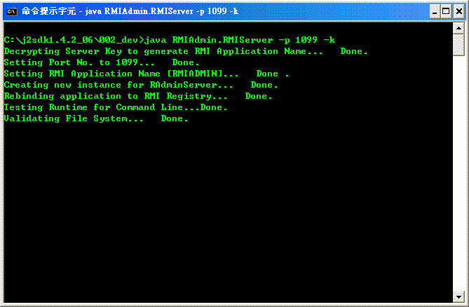

The RMI Server application creates some remote objects, calls the registry to associate (or bind) a name, makes references to them accessible, and waits for clients to invoke methods on these remote objects.
RMI Server provides the mechanism by which the RMI Client communicate and pass information back and forth, which therefore coule be identfied as a distributed object application.
To start the RMI service at remote server, please read the instruction below.
* Note that if you would like to entertain the "Remote Control [Beta]" feature, please make sure you start the RMI server under a Graphical User Environment.
For details, please read the Remote Control page to get more information.
Usage instructions
-
java -cp fullpath_&_name_of_the_RMIAdmin.jar RMIAdmin.RMIServer -h
Display the help menu
-
java -cp fullpath_&_name_of_the_RMIAdmin.jar RMIAdmin.RMIServer -p port_no
Specify the "Port Number" of remote RMIServer e.g. "1099", if this option is not specified, the program will automatically use the default RMI port [1099].
-
java -cp fullpath_&_name_of_the_RMIAdmin.jar RMIAdmin.RMIServer -k
To activate the encryption of RMI Service Name, this parameter is optional.
Usage examples
java -cp fullpath_&_name_of_the_RMIAdmin.jar RMIAdmin.RMIServer -p port_no -k
-
Start the RMI Server on port 1091 with encrypted RMI service name.
[Windows Example]
java -cp fullpath_&_name_of_the_RMIAdmin.jar RMIAdmin.RMIServer -p 1099 -k

[Linux Example]
java -cp fullpath_&_name_of_the_RMIAdmin.jar RMIAdmin.RMIServer -p 1099 -k
Usage Tips
-
Note that the command entered is case sensitive for both Windows and
Unix-like system.
-
To run this command successfully, you must use the java -cp parameter to
specify the CLASSPATH at runtime.
[Windows Example]
java -cp fullpath_of_RMIAdmin.jar
e.g. java -cp C:\RMIAdmin\RMIAdmin.jar RMIAdmin.RMIServer -p 1099 -k
* Assume RMIAdmin.jar is installed in C:\RMIAdmin
[Linux Example]
java -cp fullpath_of_RMIAdmin.jar
e.g. java -cp /RMIAdmin/RMIAdmin.jar RMIAdmin.RMIServer -p 1099 -k
* Assume RMIAdmin.jar is installed in /RMIAdmin
Related Topics:
|
|
Copyright 2005 © RMIAdmin. All rights reserved. |